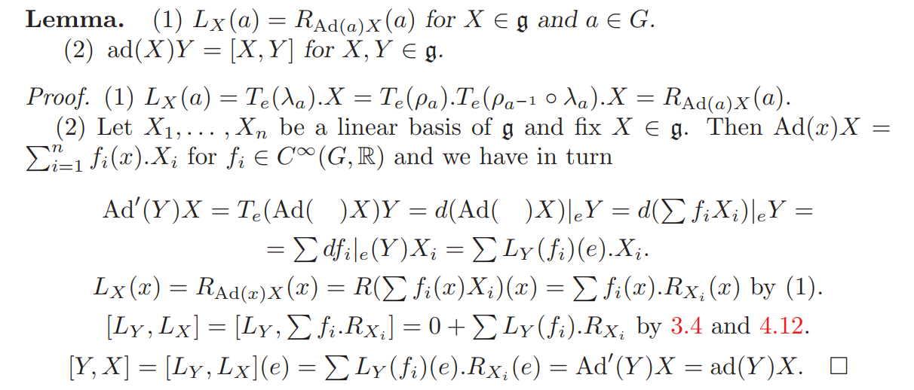
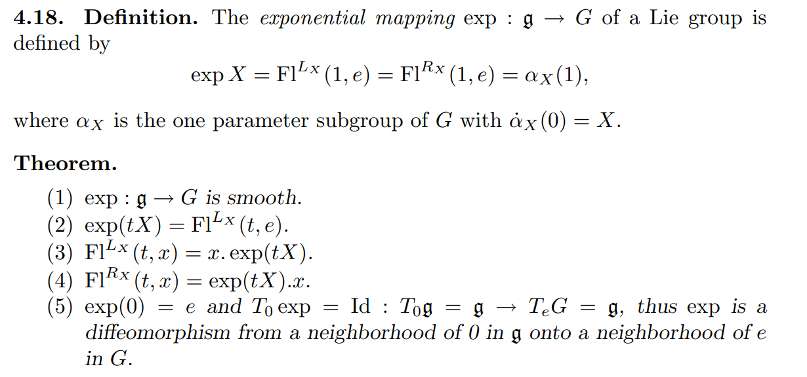
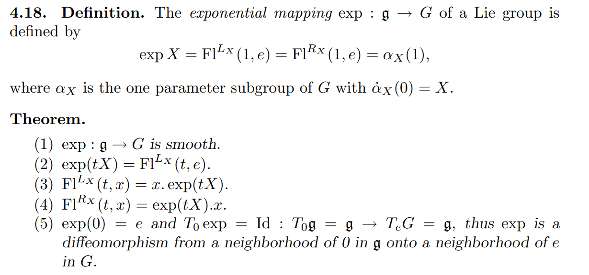
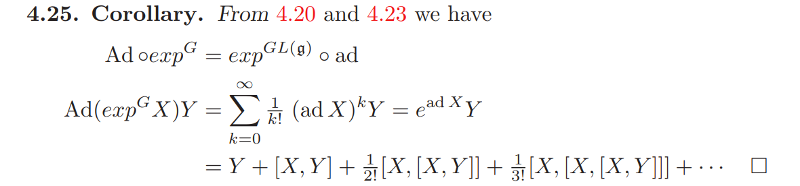
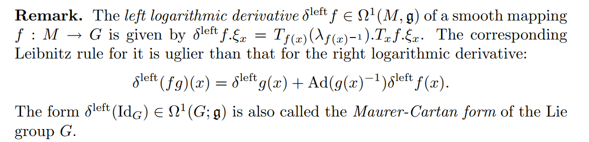

Tangent space and tangent map
Let M be a m-dimension manifold, and TM be its tangent bundle.
Then for p∈M, we denote the tangent space of M at p by TpM;
The projection function πM:TM→M is defined as πM[TpM]={p};
If f:M→N is a smooth map, then we denote its tangent map by Tf:TM→TN and the pointwise tangent map by Tpf:TpM→Tf(p)N (for p∈M).
Note Tf[TpM]=Range(Tpf)⊂Tf(p)N
Let f:K→M, g:M→N be smooth maps between manifolds and h=g∘f:K→N.
Then
Th=Tg∘Tf:TK→TN,
and the pointwise version is
Tph=Tf(p)g∘Tpf:TpK→Th(p)N=Tg(f(p))N (for p∈K).
To be more specific, let p∈K,Xp∈TpK, then
(Th)Xp=(Tg)(Tf)Xp=(Tg)(Tpf)Xp=(Tf(p)g)(Tpf)X=(Tph)X
If f is invertible, then T(f−1)=(Tf)−1
Define:
multiply two elements: μ:G×G→G,(g,h)↦gh;
multiply g from left: λg:G→G,h↦gh;
λg is a self-diffeomorphism (hence invertible) and λg−1=λg−1
multiply g from right: ρg:G→G,h↦hg
ρg is a self-diffeomorphism (hence invertible) and ρg−1=ρg−1
μ∗=Tμ,λg∗=Tλg,ρg∗=Tρg represent the corresponding tangent maps.
μ(g,h)=gh=ρh(g)=λg(h)
T(g,h)μ(Xg,Yh)=(Tgρh)Xg+(Thλg)Yh
Invariant vector fields and the Lie bracket on g=TeG
We use g=TeG to denote the tangent space at e;
A tangent vector field L is said to be left-invariant iif L(g)=(Teλg)L(e).
Every vector in g can generate a left-invariant vector field, and every left-invariant vector field on G can be generated by its value at e (a vector in g);
λg is smooth map that maps e to g, then the tangent map of λg sends vectors in TeG to TgG; If a vector in TeG is given, then we can "translate" this vector to every g on G by λg and gain a (left-invariant) vector field on G.
Let's say X∈g, and LX is the left-invariant vector field generated by X, then LX(g)=(Teλg)X;
Conversely, if L is a left invariant vector field and L(g)=Yg∈TgG, then the generator X(∈g) of L is:
X=(Teλg)−1Yg=(Tgλg−1)Yg.
The Lie bracket on left-invariant vector fields induces a Lie bracket []Lon g, defined by: [X,Y]L=Z iff [LX,LY]=LZ.
Similarly, a tangent vector field R is right-invariant iif R(g)=(Teμg)R(e).
For X∈g, we denote RX the right-invariant vector field generated by X, and RX(g)=(Teμg)X;
Conversely, if R is a rightinvariant vector field and R(g)=Yg∈TgG, then the generator X(∈g) of R is:
X=(Teρg)−1Yg=(Tgρg−1)Yg
The Lie bracket on right-invariant vector fields also induces a Lie bracket []Ron g, defined by: [X,Y]R=Z iff [RX,RY]=RZ.
Then, what's the relationship between the two Lie brackets []L and []R on g?
[X,Y]L=−[X,Y]R?
The Lie bracket of a left invariant vector field LX and a right invariant vector field RY always vanish: [LX,RY]=0
Proof ??
Lie group homomorphism induces Lie algebra homomorphism:

So we have
ϕ′[X,Y]=[ϕ′(X),ϕ′(Y)]
for the two involved Lie algebras.
For adjoint representations (introduced below), let ϕ=Ad,ϕ′=ad, then ad[X,Y]=[adX,adY]
Automorphisms and adjoint representation
Let G be a Lie group. Every g∈G can generate an automorphism
conjg:G→G defined as
conjg=λg∘ρg−1=ρg−1∘λg
or exciplicitly, conjg(h)=ghg−1=(λg∘ρg−1).
conjg(e)=e
conjg(h1h2)=gh1h2g−1=gh1g−1gh2g−1=conjg(h1)conjg(h2)
The tangent map of conjg (by the chain rule) : Tconjg=Tλg∘Tρg−1=Tρg−1∘Tλg,
at e∈G:
Teconjg=Tg−1λg∘Teρg−1=Tgρg−1∘Teλg:TeG→TeG
Teconjg:g→g defines an automorphism of g.
The space of all the automorphisms of g is GL(g);
Define the adjoint representation of G:
Ad:G→GL(g),g↦Teconjg=Tg−1λg∘Teρg−1=Tgρg−1∘Teλg
Ad itself, as a smooth map form manifold G into GL(g), has its tangent map T(Ad), too.
Consider this tangent map at e∈G, Te(Ad).
Then the adjoint representation ad of Lie algebra g is the tangent map of Ad at e∈G, Te(Ad), i.e.
ad=Te(Ad):g→gl(g)
An important result is : (adX)Y=[X,Y]:

Left and right perturbation
Let's give a perturbation to g∈G.
We can make the perturbation either from the left or from the right, i.e. exp(Δl)g or gexp(Δr).
If the two perturbation are equivalent, i.e. exp(Δl)g=gexp(Δr), then what can we say about Δr and Δl?
Actually we have exp(Δl)=conjg(exp(Δr)), and for infinitesimal perturbation (tangent at e), it just writes Δl=Ad(g)(Δr), or Δr=Ad(g−1)(Δl).
exponential map exp:g→G,X↦exp(X) 一般借助单参子群或左/右不变向量场的 local flow 来定义。
其中单参子群更容易理解一些。
若 c:R→G,t↦c(t) 是一个李群同态，也是G上的一条曲线；曲线c 在 c(0)=e∈G 处的切向量c′(0).1 (其中.1代表作用于R上的单位切向量) 是李代数 g 中的元素；
反过来，对任意 X∈g，也存在一个唯一的曲线cX 使得cX:R→G是一个李群同构，或单参子群，且cX′(0).1=X;
指数映射定义为：exp(X)=cX(1)。
考虑曲线 cαX(t):=cX(αt)，根据链式法则，cαX′=αcX′；所以cαX(t) 也给出一个李群同态，且它在G的单位元 e 处的切向量是 cαX′(0)=αcX′(0)=αX；因此: exp(αX)=cαX(1)=cX(α)
于是，dtdexp(tX)=dtdcX(t)。
指数映射也可通过 左/右 不变向量场过单位元 e 处的积分曲线、或其 local flow 来等价地定义。左/右 不变向量场过单位元 e 处的积分曲线是一个单参子群。 

前面提到过李群同态诱导李代数同态。同态与 exp 是可交换的。
Let f:G→H be a homomorphism between Lie groups G and H, then:
f∘expG=expH∘Tef:g→H

群的伴随表示 Ad:G→GL(g) 也是一个李群同态，所以Ad/ad 与 exp 可交换：Ad∘expG=expGL(g)∘ad:g→GL(g)

通过上图中的式子，我们第一次把一般李群的指数映射与矩阵的幂级数联系起来（上图中的 (adX) 是 g 上的一个线性变换，可看做一个矩阵），使得抽象的一般李群在某种意义上也变得可计算了。
todo：证明 dexp:g→g 非退化，所以根据反函数定理，在足够小的邻域中 exp 可逆，是个局部微分同胚，用exp−1 或 log 来表示exp的逆。

首先，定义 ρg:G→G为右乘 g 、或右平移g 运算，即ρgh=hg；其逆为 ρg−1，即右平移g−1; 二者的切映射分别为 Tρg,Tρg−1:TG→TG;
注意， ρg−1可以把 g "右平移" 回 e，Tρg−1把 g 的切空间 TgG 右平移回 TeG≡g; 具体地，Tgρg−1:TgG→g;
为了方便，我们再定义一个函数 ξ:TG→g，它可以把G每点处的切向量都右平移回 g 上： 对于每个切向量 s∈TgG，它都对应一个右不变向量场 ζ使得ζ(g)=s，那么 ξ(s)=ζ(e);
现在可以定义右对数导数 (The right logarithmic derivative) δ了。
对于映射 f:M→G，其右对数导数 δf:TM→g 定义为δf=ξ∘Tf.
简而言之，就是把切映射 Tf 和右平移 ξ 组合起来，把 M上的切向量都映射并右平移到 g 上；
关于 右对数导数 δ 有如下引理：(其中μ:G×G→G 为群乘法 μ(a,b)=ab)

类似地也可以定义左对数导数：

先回顾下几个函数的 domain：
exp:g→G
T(exp):Tg→TG （注意 Tg，可以理解为 g 的每点处又都长出一个 g）
TX(exp):g≡TXg→Texp(X)G,for X∈g
对于 Y∈TXg≡g,T(exp)Y∈Texp(X)G，我们通过右平移把exp(X)处的切向量 T(exp)Y 平移回单位元 e处，得到 Y′∈g；
反过来，单位元 e 处的切向量Y′，通过右平移（右乘 exp(X)），变成了 exp(X)处的切向量 T(exp)Y 。沿此方向的无穷小微扰 ϵ 作用为 exp(X+Yϵ)=exp(Y′ϵ)exp(X)
于是可以定义X处的 left jacobian Jl(X)≡δ(exp)∣TXg:Y↦Y′=Jl(X)Y，从而
exp(X+Yϵ)=exp(Jl(X)Yϵ)exp(X)。
Jl(X) 的逆 记为 Jl−1(X):Y′↦Y=Jl−1(X)Y′.
类似地可定义 right jacobian，假设 exp(X+Yϵ)=exp(X)exp(Jr(X)Yϵ),
考虑到
exp(X+Yϵ)=[exp(X+Yϵ)−1]−1=[exp(−X−Yϵ)]−1=[exp(−Jl(−X)Yϵ)exp(−X)]−1=exp(X)exp(Jl(−X)Yϵ)
所以我们有 Jr(X)=Jl(−X).
关于 Jl 和 δ(exp) ， 我们有（后面会贴证明）：
Jl(X)=δ(exp)(X):=δ(exp)∣TXg=p=0∑∞(p+1)!1(ad X)p=g(ad X)
其中 g 是一个幂级数简写符号，g(z):=zez−1，注意这里 zez−1 不代表要 "除以z" 或乘以 z−1，而只是用来简记它所对应的幂级数。
至此，我们已经可以用幂级数来表示 Jl(X) 了，那它的逆 Jl−1(X) 是否也能用幂级数表示？可以的：
Jl−1(X)=n=0∑∞n+1(−1)n(eadX−I)n=f(eadX)
其中 f 为 y−1log(y) 对应的幂级数简写：f(y)=y−1log(y)。定义这些简写可以方便我们做幂级数的计算，比如从简写符号上可以直接看出 g(logy)⋅f(y)=1，即 f(y)=g(logy)−1；令 y=eadX，则有 f(eadX)=g(adX)−1=Jl−1(X)。
Jl(X)=δ(exp)(X)=∑p=0∞(p+1)!1(ad X)p=g(ad X) 的证明如下：

利用前面提到的右对数导数（left jacobian）及其逆 ，通过对 Jl−1 积分即可求得 BCH 公式。
考虑 G 上的轨迹 z(t)=exp(tX)exp(Y)，随着时间 t 从 0 到 1，z 从 exp(Y) 处移动到 exp(X)exp(Y)，且在每个时刻 t，z 的运动方向 z˙ 右平移到 g 上后都始终沿 X 方向；
再来看在 g 上 Z(t):=logz(t) 的轨迹。首先，在 t=0 时， Z=logz 在 Y 点处；在每个时刻t，Z 的运动方向为 Z˙=Jl−1(Z)X （因为 z˙ 右平移到 g 上是沿 X 方向），因此在 t=1 时，我们有
Z(1)=log(exp(X)exp(Y))=Z(0)+∫t=01Z˙(t)dt=Y+∫t=01Jl−1(Z(t))Xdt=Y+∫t=01f(ead.Z(t))Xdt=Y+∫t=01f(Ad.exp(Z(t)))Xdt(by 4.25)=Y+∫t=01f(Ad(exp(tX)exp(Y)))Xdt=Y+∫t=01f(Ad(exp(tX))⋅Ad(exp(Y))))Xdt=Y+∫t=01f(et⋅ad.Xead.Y)Xdt
拆开此积分即得 BCH 公式。

Let R be a ring or an associative algebra, we define a function R:
expn(x)=∑k=0nk!xk=I+∑k=1nk!xk
define the Lie bracke [x,y]=xy−yx.
If R is also a metric space, and the series (expn(x)) converges to some point, then we can write
exp(x)=limn→∞expn(x).
So we define the function exp on R:
exp(x)=limn→∞expn(x) if the limit exists.
Also, we can define log(x) by series. Then, log(exp(x)exp(y)) can be rewriten in terms of [] by applying [x,y]=xy−yx, and this leads to the BCH formula.
The linear oprators L(V) on a finite dimensional vector space V forms a Banach Algebra, e.g. L(Rn) and L(g) for some Lie algebra g.
Let X(M) be the space of tangent vector fields on a manifold M. Since every tangent vector filed X(M)∈X(M) can be seen as a map that convert a smooth function into another (C∞(M)→C∞(M)), and the pointwise-addtion and the composition operator between these maps (the vector fields) make X(M) an associative algebra.
Now consider an analytic function f and a vector field X on M. What does exp(tX)f stands for (let's suppose exp(tX) exists as a vector field)?
Consider an integral curve c of X, define fc:=f∘c，i.e. fc(t)=f(c(t)).
If fc is locally analytic and t is small, then we can write
fc(t)=fc(0)+∑n≥1fc(n)(0)tn/n!
but note that fc(n)(0) is exactly Xnf(c(0)), so f(c(t))=(exp(tX)f)(c(0)). That is to say, exp(tX) acts on an analytic function f by making f "flow" a period of time t along X.
Furthermore, if the underlying manifold is a Lie group G, X is a left/right invariant field and the integral curve c is chosen as c(0)=e,c′(0)=Xe, then f(c(t))=(exp(tX)f)(e). With this property we can associate the vector field tX, or just its value at e, tXe, with the element c(t) of the Lie group, writen as something like exp(tXe)=c(t). However, this coincides with the standard definition of exp for a Lie groups, which can provide a new perspective to understand the exponential map: every group element g∈G can be seen as a transformation of analytic functions on G. To be more specific, g can left-translate (or right-translate, depending on the invariant type we choose) the function, f↦f∘λg, acting like an invariant field, so we associate the invariant field with g by the map exp.